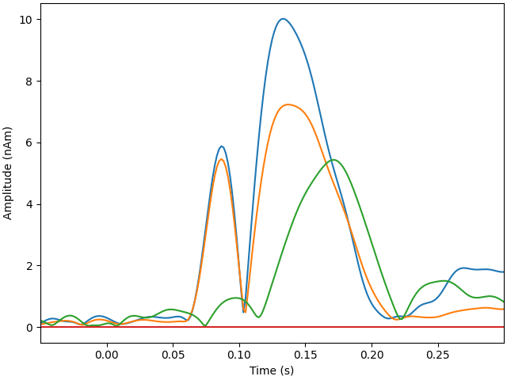
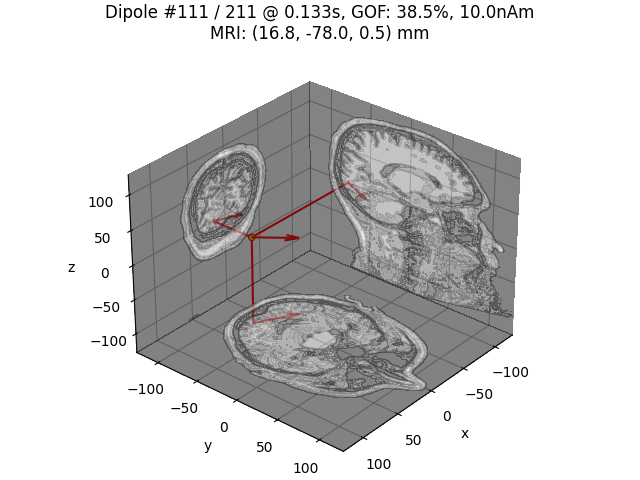
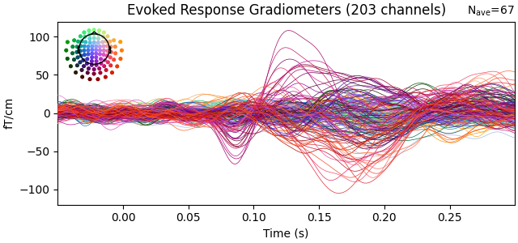

Note
Go to the end to download the full example code
Compute a sparse inverse solution using the Gamma-MAP empirical Bayesian method#
See [1] for details.
# Author: Martin Luessi <mluessi@nmr.mgh.harvard.edu>
# Daniel Strohmeier <daniel.strohmeier@tu-ilmenau.de>
#
# License: BSD-3-Clause
import numpy as np
import mne
from mne.datasets import sample
from mne.inverse_sparse import gamma_map, make_stc_from_dipoles
from mne.viz import (plot_sparse_source_estimates,
plot_dipole_locations, plot_dipole_amplitudes)
print(__doc__)
data_path = sample.data_path()
subjects_dir = data_path / 'subjects'
meg_path = data_path / 'MEG' / 'sample'
fwd_fname = meg_path / 'sample_audvis-meg-eeg-oct-6-fwd.fif'
evoked_fname = meg_path / 'sample_audvis-ave.fif'
cov_fname = meg_path / 'sample_audvis-cov.fif'
# Read the evoked response and crop it
condition = 'Left visual'
evoked = mne.read_evokeds(evoked_fname, condition=condition,
baseline=(None, 0))
evoked.crop(tmin=-50e-3, tmax=300e-3)
# Read the forward solution
forward = mne.read_forward_solution(fwd_fname)
# Read noise noise covariance matrix and regularize it
cov = mne.read_cov(cov_fname)
cov = mne.cov.regularize(cov, evoked.info, rank=None)
# Run the Gamma-MAP method with dipole output
alpha = 0.5
dipoles, residual = gamma_map(
evoked, forward, cov, alpha, xyz_same_gamma=True, return_residual=True,
return_as_dipoles=True)
Reading /home/circleci/mne_data/MNE-sample-data/MEG/sample/sample_audvis-ave.fif ...
Read a total of 4 projection items:
PCA-v1 (1 x 102) active
PCA-v2 (1 x 102) active
PCA-v3 (1 x 102) active
Average EEG reference (1 x 60) active
Found the data of interest:
t = -199.80 ... 499.49 ms (Left visual)
0 CTF compensation matrices available
nave = 67 - aspect type = 100
Projections have already been applied. Setting proj attribute to True.
Applying baseline correction (mode: mean)
Reading forward solution from /home/circleci/mne_data/MNE-sample-data/MEG/sample/sample_audvis-meg-eeg-oct-6-fwd.fif...
Reading a source space...
Computing patch statistics...
Patch information added...
Distance information added...
[done]
Reading a source space...
Computing patch statistics...
Patch information added...
Distance information added...
[done]
2 source spaces read
Desired named matrix (kind = 3523) not available
Read MEG forward solution (7498 sources, 306 channels, free orientations)
Desired named matrix (kind = 3523) not available
Read EEG forward solution (7498 sources, 60 channels, free orientations)
Forward solutions combined: MEG, EEG
Source spaces transformed to the forward solution coordinate frame
366 x 366 full covariance (kind = 1) found.
Read a total of 4 projection items:
PCA-v1 (1 x 102) active
PCA-v2 (1 x 102) active
PCA-v3 (1 x 102) active
Average EEG reference (1 x 60) active
Computing rank from covariance with rank=None
Using tolerance 3.8e-12 (2.2e-16 eps * 306 dim * 56 max singular value)
Estimated rank (mag + grad): 303
MEG: rank 303 computed from 306 data channels with 3 projectors
Using tolerance 4.8e-14 (2.2e-16 eps * 60 dim * 3.6 max singular value)
Estimated rank (eeg): 59
EEG: rank 59 computed from 60 data channels with 1 projector
8 projection items activated
MAG regularization : 0.1
Created an SSP operator (subspace dimension = 3)
Computing rank from covariance with rank={'meg': 303, 'eeg': 59}
Using tolerance 2.5e-14 (2.2e-16 eps * 102 dim * 1.1 max singular value)
Estimated rank (mag): 99
MAG: rank 99 computed from 102 data channels with 3 projectors
Setting small MAG eigenvalues to zero (without PCA)
GRAD regularization : 0.1
Computing rank from covariance with rank={'meg': 303, 'eeg': 59, 'mag': 99}
Using tolerance 1.8e-13 (2.2e-16 eps * 203 dim * 3.9 max singular value)
Estimated rank (grad): 203
GRAD: rank 203 computed from 203 data channels with 0 projectors
Setting small GRAD eigenvalues to zero (without PCA)
EEG regularization : 0.1
Created an SSP operator (subspace dimension = 1)
Computing rank from covariance with rank={'meg': 303, 'eeg': 59, 'mag': 99, 'grad': 203}
Setting small EEG eigenvalues to zero (without PCA)
Converting forward solution to surface orientation
Average patch normals will be employed in the rotation to the local surface coordinates....
Converting to surface-based source orientations...
[done]
Computing inverse operator with 364 channels.
364 out of 366 channels remain after picking
Selected 364 channels
Creating the depth weighting matrix...
Applying loose dipole orientations to surface source spaces: 0.2
Whitening the forward solution.
Created an SSP operator (subspace dimension = 4)
Computing rank from covariance with rank=None
Using tolerance 3.3e-13 (2.2e-16 eps * 305 dim * 4.8 max singular value)
Estimated rank (mag + grad): 302
MEG: rank 302 computed from 305 data channels with 3 projectors
Using tolerance 4.7e-14 (2.2e-16 eps * 59 dim * 3.6 max singular value)
Estimated rank (eeg): 58
EEG: rank 58 computed from 59 data channels with 1 projector
Setting small MEG eigenvalues to zero (without PCA)
Setting small EEG eigenvalues to zero (without PCA)
Creating the source covariance matrix
Adjusting source covariance matrix.
Whitening data matrix.
Iteration: 0 active set size: 22494 convergence: 9.054e-01
Iteration: 8 active set size: 22233 convergence: 1.856e-01
Iteration: 9 active set size: 20712 convergence: 1.375e-01
Iteration: 10 active set size: 17166 convergence: 1.061e-01
Iteration: 11 active set size: 12996 convergence: 8.273e-02
Iteration: 12 active set size: 10107 convergence: 6.574e-02
Iteration: 13 active set size: 8307 convergence: 5.319e-02
Iteration: 14 active set size: 7209 convergence: 4.369e-02
Iteration: 15 active set size: 6342 convergence: 3.631e-02
Iteration: 16 active set size: 5694 convergence: 3.047e-02
Iteration: 17 active set size: 5142 convergence: 2.579e-02
Iteration: 18 active set size: 4692 convergence: 2.199e-02
Iteration: 19 active set size: 4287 convergence: 1.889e-02
Iteration: 20 active set size: 4002 convergence: 1.634e-02
Iteration: 21 active set size: 3696 convergence: 1.422e-02
Iteration: 22 active set size: 3429 convergence: 1.246e-02
Iteration: 23 active set size: 3153 convergence: 1.099e-02
Iteration: 24 active set size: 2952 convergence: 9.748e-03
Iteration: 25 active set size: 2745 convergence: 8.703e-03
Iteration: 26 active set size: 2559 convergence: 7.817e-03
Iteration: 27 active set size: 2394 convergence: 7.063e-03
Iteration: 28 active set size: 2229 convergence: 6.417e-03
Iteration: 29 active set size: 2067 convergence: 5.883e-03
Iteration: 30 active set size: 1944 convergence: 5.711e-03
Iteration: 31 active set size: 1836 convergence: 5.551e-03
Iteration: 32 active set size: 1731 convergence: 5.400e-03
Iteration: 33 active set size: 1617 convergence: 5.266e-03
Iteration: 34 active set size: 1509 convergence: 5.166e-03
Iteration: 35 active set size: 1440 convergence: 5.066e-03
Iteration: 36 active set size: 1350 convergence: 4.964e-03
Iteration: 37 active set size: 1245 convergence: 4.861e-03
Iteration: 38 active set size: 1200 convergence: 4.754e-03
Iteration: 39 active set size: 1128 convergence: 4.643e-03
Iteration: 40 active set size: 1077 convergence: 4.529e-03
Iteration: 41 active set size: 1017 convergence: 4.410e-03
Iteration: 42 active set size: 975 convergence: 4.288e-03
Iteration: 43 active set size: 924 convergence: 4.163e-03
Iteration: 44 active set size: 873 convergence: 4.036e-03
Iteration: 45 active set size: 837 convergence: 3.906e-03
Iteration: 46 active set size: 798 convergence: 3.776e-03
Iteration: 47 active set size: 744 convergence: 3.644e-03
Iteration: 48 active set size: 705 convergence: 3.513e-03
Iteration: 49 active set size: 687 convergence: 3.382e-03
Iteration: 50 active set size: 660 convergence: 3.253e-03
Iteration: 51 active set size: 627 convergence: 3.125e-03
Iteration: 52 active set size: 600 convergence: 3.000e-03
Iteration: 53 active set size: 588 convergence: 2.877e-03
Iteration: 54 active set size: 570 convergence: 2.758e-03
Iteration: 55 active set size: 552 convergence: 2.642e-03
Iteration: 56 active set size: 528 convergence: 2.529e-03
Iteration: 57 active set size: 495 convergence: 2.421e-03
Iteration: 58 active set size: 486 convergence: 2.316e-03
Iteration: 59 active set size: 465 convergence: 2.215e-03
Iteration: 60 active set size: 441 convergence: 2.119e-03
Iteration: 61 active set size: 417 convergence: 2.026e-03
Iteration: 62 active set size: 408 convergence: 1.937e-03
Iteration: 63 active set size: 402 convergence: 1.853e-03
Iteration: 64 active set size: 387 convergence: 1.772e-03
Iteration: 65 active set size: 378 convergence: 1.695e-03
Iteration: 66 active set size: 348 convergence: 1.622e-03
Iteration: 67 active set size: 339 convergence: 1.552e-03
Iteration: 68 active set size: 333 convergence: 1.486e-03
Iteration: 69 active set size: 330 convergence: 1.423e-03
Iteration: 71 active set size: 312 convergence: 1.306e-03
Iteration: 72 active set size: 306 convergence: 1.252e-03
Iteration: 73 active set size: 297 convergence: 1.201e-03
Iteration: 74 active set size: 288 convergence: 1.152e-03
Iteration: 75 active set size: 273 convergence: 1.106e-03
Iteration: 76 active set size: 261 convergence: 1.062e-03
Iteration: 77 active set size: 252 convergence: 1.020e-03
Iteration: 78 active set size: 240 convergence: 9.807e-04
Iteration: 79 active set size: 234 convergence: 9.431e-04
Iteration: 80 active set size: 222 convergence: 9.074e-04
Iteration: 81 active set size: 219 convergence: 8.735e-04
Iteration: 82 active set size: 213 convergence: 8.412e-04
Iteration: 83 active set size: 210 convergence: 8.105e-04
Iteration: 84 active set size: 207 convergence: 7.813e-04
Iteration: 85 active set size: 198 convergence: 7.535e-04
Iteration: 86 active set size: 192 convergence: 7.271e-04
Iteration: 87 active set size: 186 convergence: 7.018e-04
Iteration: 88 active set size: 180 convergence: 6.778e-04
Iteration: 89 active set size: 174 convergence: 6.549e-04
Iteration: 91 active set size: 168 convergence: 6.121e-04
Iteration: 92 active set size: 159 convergence: 5.922e-04
Iteration: 93 active set size: 156 convergence: 5.731e-04
Iteration: 94 active set size: 150 convergence: 5.549e-04
Iteration: 98 active set size: 138 convergence: 4.895e-04
Iteration: 99 active set size: 132 convergence: 4.749e-04
Iteration: 100 active set size: 129 convergence: 4.608e-04
Iteration: 102 active set size: 126 convergence: 4.344e-04
Iteration: 103 active set size: 123 convergence: 4.220e-04
Iteration: 104 active set size: 120 convergence: 4.100e-04
Iteration: 105 active set size: 117 convergence: 3.985e-04
Iteration: 106 active set size: 111 convergence: 3.875e-04
Iteration: 107 active set size: 108 convergence: 3.769e-04
Iteration: 108 active set size: 105 convergence: 3.666e-04
Iteration: 110 active set size: 102 convergence: 3.473e-04
Iteration: 113 active set size: 99 convergence: 3.208e-04
Iteration: 114 active set size: 93 convergence: 3.126e-04
Iteration: 115 active set size: 90 convergence: 3.047e-04
Iteration: 120 active set size: 84 convergence: 2.688e-04
Iteration: 123 active set size: 78 convergence: 2.500e-04
Iteration: 124 active set size: 75 convergence: 2.441e-04
Iteration: 125 active set size: 72 convergence: 2.384e-04
Iteration: 126 active set size: 69 convergence: 2.329e-04
Iteration: 127 active set size: 66 convergence: 2.275e-04
Iteration: 133 active set size: 63 convergence: 1.985e-04
Iteration: 137 active set size: 60 convergence: 1.817e-04
Iteration: 154 active set size: 57 convergence: 1.273e-04
Iteration: 155 active set size: 54 convergence: 1.247e-04
Iteration: 168 active set size: 51 convergence: 9.649e-05
Iteration: 177 active set size: 48 convergence: 8.116e-05
Iteration: 179 active set size: 45 convergence: 7.813e-05
Iteration: 181 active set size: 42 convergence: 7.523e-05
Iteration: 211 active set size: 39 convergence: 4.307e-05
Iteration: 227 active set size: 36 convergence: 3.214e-05
Iteration: 252 active set size: 33 convergence: 2.041e-05
Iteration: 293 active set size: 30 convergence: 9.730e-06
Iteration: 303 active set size: 27 convergence: 8.124e-06
Iteration: 310 active set size: 24 convergence: 7.160e-06
Iteration: 313 active set size: 21 convergence: 6.783e-06
Iteration: 340 active set size: 18 convergence: 4.168e-06
Iteration: 343 active set size: 15 convergence: 3.949e-06
Iteration: 384 active set size: 12 convergence: 1.886e-06
Iteration: 420 active set size: 12 convergence: 9.855e-07
Convergence reached !
Explained 22.3% variance
[done]
Plot dipole activations
plot_dipole_amplitudes(dipoles)
# Plot dipole location of the strongest dipole with MRI slices
idx = np.argmax([np.max(np.abs(dip.amplitude)) for dip in dipoles])
plot_dipole_locations(dipoles[idx], forward['mri_head_t'], 'sample',
subjects_dir=subjects_dir, mode='orthoview',
idx='amplitude')
# # Plot dipole locations of all dipoles with MRI slices
# for dip in dipoles:
# plot_dipole_locations(dip, forward['mri_head_t'], 'sample',
# subjects_dir=subjects_dir, mode='orthoview',
# idx='amplitude')
- 
- 
Show the evoked response and the residual for gradiometers
ylim = dict(grad=[-120, 120])
evoked.pick_types(meg='grad', exclude='bads')
evoked.plot(titles=dict(grad='Evoked Response Gradiometers'), ylim=ylim,
proj=True, time_unit='s')
residual.pick_types(meg='grad', exclude='bads')
residual.plot(titles=dict(grad='Residuals Gradiometers'), ylim=ylim,
proj=True, time_unit='s')
- 

Removing projector <Projection | PCA-v1, active : True, n_channels : 102>
Removing projector <Projection | PCA-v2, active : True, n_channels : 102>
Removing projector <Projection | PCA-v3, active : True, n_channels : 102>
Removing projector <Projection | Average EEG reference, active : True, n_channels : 60>
Removing projector <Projection | PCA-v1, active : True, n_channels : 102>
Removing projector <Projection | PCA-v2, active : True, n_channels : 102>
Removing projector <Projection | PCA-v3, active : True, n_channels : 102>
Removing projector <Projection | Average EEG reference, active : True, n_channels : 60>
Generate stc from dipoles
stc = make_stc_from_dipoles(dipoles, forward['src'])
Converting dipoles into a SourceEstimate.
[done]
View in 2D and 3D (“glass†brain like 3D plot) Show the sources as spheres scaled by their strength
scale_factors = np.max(np.abs(stc.data), axis=1)
scale_factors = 0.5 * (1 + scale_factors / np.max(scale_factors))
plot_sparse_source_estimates(
forward['src'], stc, bgcolor=(1, 1, 1),
modes=['sphere'], opacity=0.1, scale_factors=(scale_factors, None),
fig_name="Gamma-MAP")
Total number of active sources: 4
References#
Total running time of the script: ( 0 minutes 35.772 seconds)
Estimated memory usage: 297 MB